A cluster is only worth something once it can be given a name. This block turns the labels “cluster 1, cluster 2” into descriptions: which variables lie above or below the mean in each cluster, which categories and which species characterise it, which simple rules recognise it, and how to assign objects that took no part in the analysis to the clusters.
Block 7 has one theory card and four working cards. In 1 · Profile the clusters you choose the partition and the variables. 2 · What characterises each cluster describes each cluster with tiles, written summary cards, tables and figures. 3 · Discriminant analysis and classification rules fits a linear discriminant analysis and a classification tree that reproduce the clusters. 4 · Assign new observations uses those rules to classify new objects. Cards 2 to 4 appear when you press Profile →; the same button enables Block 8.
| Tool | Question | Result |
|---|---|---|
| Test value v, ANOVA and Kruskal–Wallis | Which variables distinguish each cluster? | Means by cluster with their v; F, η² and P values by variable. |
| Proportions and χ² | Which categories are abundant in each cluster? | Over- and under-represented categories; Cramér’s V. |
| Indicator value (IndVal) | Which species indicate each cluster? | Specificity, fidelity and permutation test. |
| Linear discriminant analysis | Which combination of variables separates the clusters? | Discriminant axes, weights, accuracy and map. |
| Classification tree | Which simple rules recognise each cluster? | Rules of the form “Cluster 3 if DaysToFlower ≤ 73”. |
| Assignment of new objects | Which cluster does a new object belong to? | Three assignments and their agreement. |
Describing a cluster means saying how it departs from the whole data set. The app compares the mean of each cluster with the overall mean by means of a test value.
| Column in Block 1 | Appears as |
|---|---|
| Active quantitative, count, binary or ordinal | Quantitative variable, with its original values (not those transformed in Block 2). |
| Active nominal | Categorical variable. |
| Supplementary | Quantitative or categorical according to its type, marked supplementary; missing values are replaced by the mean or form the category (missing). |
| Label, known groups or excluded | Does not appear. |
The indicator species checkbox appears when there are at least two count or binary variables, and it is ticked if Block 2 recognised an ecological or binary table. With DBSCAN, noise is described as one more cluster, the last one.
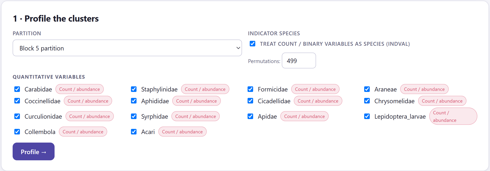
1 2 3 4If a cluster of nk objects were drawn at random from the N, its mean would vary around the overall mean with variance s²/nk · (N − nk)/(N − 1), where s² is the variance of the variable with denominator N. The test value is the difference between the cluster mean and the overall mean divided by that standard deviation: v = (x̄k − x̄)/√[s²/nk · (N − nk)/(N − 1)]. It is read like a z value: |v| ≥ 1.96 flags a variable that characterises the cluster, from above if v > 0 and from below if v < 0. In addition, for each variable a one-way ANOVA tells whether it separates the clusters as a whole, with η² (the proportion of variation explained) as the effect size, and the Kruskal–Wallis test gives the same answer using ranks.
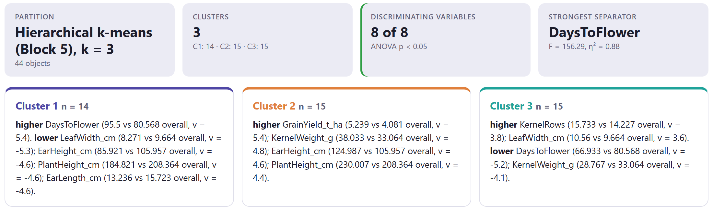
| Tile | What it shows |
|---|---|
| Partition | The partition described and the number of objects. |
| Clusters | The number of clusters and their sizes. |
| Discriminating variables | How many quantitative variables have an ANOVA with p < 0.05; in amber if none. |
| Strongest separator | The variable with the largest F, with its η². |
| Associated categorical variables | How many categorical variables have a χ² with p < 0.05 (section 8.2). |
| Indicator species | How many species are indicators with p < 0.05 (section 8.3). |
The summary cards turn the table into sentences. With the maize, cluster 1 (14 highland accessions) flowers late, at 95.5 days against 80.6 (v = 5.4), and has narrower leaves, lower ear placement, shorter plants and shorter ears. Cluster 2 (15 from the valleys) yields more, 5.24 t/ha against 4.08 (v = 5.4), with heavier grains, taller plants and higher ear placement. Cluster 3 (15 from the coast) has more rows and wider leaves, and flowers earlier: 66.9 days (v = −5.2). A card with no significant variable says that the cluster is an “average” or a small one.
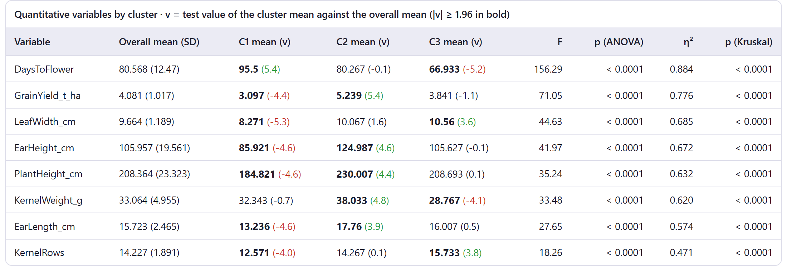
The clusters were built precisely so that they differ in the active variables, so those variables will always come out “significant”. With the uniform noise of exercise 7, which has no clusters, four of the five variables have an ANOVA with p < 0.05. Use v, F and η² to rank and describe, not as proof that the clusters exist: that is the job of Block 6. Only supplementary variables, which played no part in the clustering, support inferential statements such as “the clusters differ in altitude” when altitude was not used to form them.
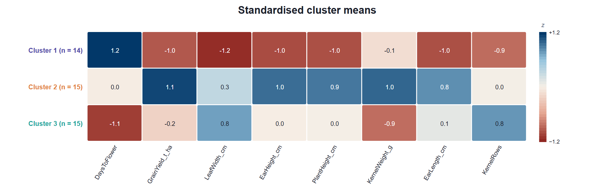
Nominal variables are described with proportions. For each category and each cluster, the app compares the proportion of the category within the cluster with its proportion in the whole data set, using a test value built in the same way as the one for means.
If a category accounts for a proportion p of the N objects and the cluster has nk, the proportion within the cluster would, by chance, have variance p(1 − p)/nk · (N − nk)/(N − 1). The test value is the difference in proportions divided by its standard deviation, a normal approximation to the hypergeometric test: v ≥ 1.96 marks an over-represented category (▲) and v ≤ −1.96 an under-represented one (▼). For the variable as a whole, the χ² test on the clusters × categories table tells whether there is an association, and Cramér’s V (from 0 to 1) how strong it is.
Each categorical variable has its own table: one row per category and one column per cluster with the count and the percentage within the cluster, the ▲ and ▼ marks, and the χ² with Cramér’s V in the title. The cluster summary cards add the over-represented categories that occur at least twice, with the percentage in the cluster against the overall one. With the soil profiles in three clusters (exercise 4), texture has χ² = 72 with 10 degrees of freedom and V = 1.00: each texture falls in a single cluster.
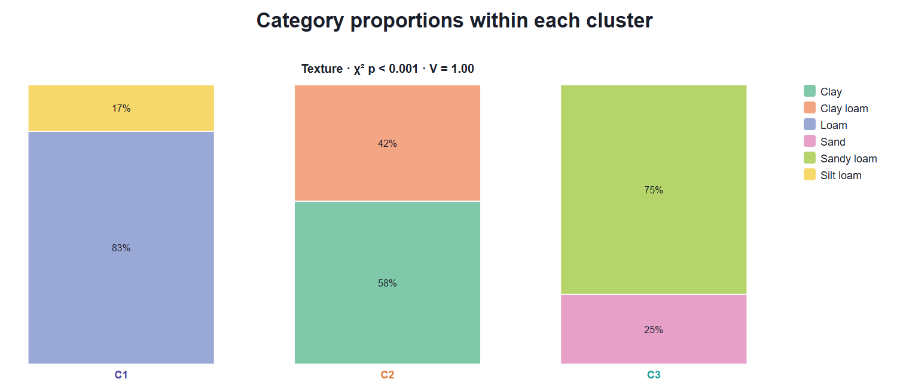
In community ecology, the natural question is not which mean is high but which species indicates each cluster: a species that lives almost only in that cluster and occurs in almost all of its sites. The indicator value of Dufrêne and Legendre, IndVal, measures exactly that.
For a species and a cluster, specificity A is the share of the species’ mean abundance that belongs to that cluster: the mean in the cluster divided by the sum of its means over all clusters. Fidelity B is the proportion of the cluster’s sites where the species occurs. IndVal = A × B, from 0 to 100%. Each species is assigned to the cluster where its IndVal is highest. Significance is obtained by permuting the cluster labels: the P value is the proportion of permutations (plus the observed one) in which the maximum IndVal equals or exceeds the observed value. With 499 permutations the smallest possible P value is 0.002.
| Pattern | Reading |
|---|---|
| High A, high B | Ideal indicator: exclusive and constant (Sagittaria, 100 × 90). |
| High A, low B | Exclusive but rare: its presence betrays the cluster, its absence says nothing (Nymphaea, 100 × 70). |
| Low A, high B | Constant but shared: frequent in the cluster and outside it too (Salix, 71 × 100). |
| IndVal > 50% and p < 0.05 | A good indicator for describing the cluster or recognising it in the field. |
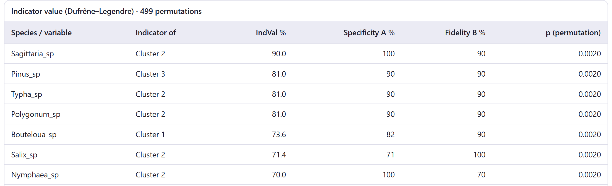
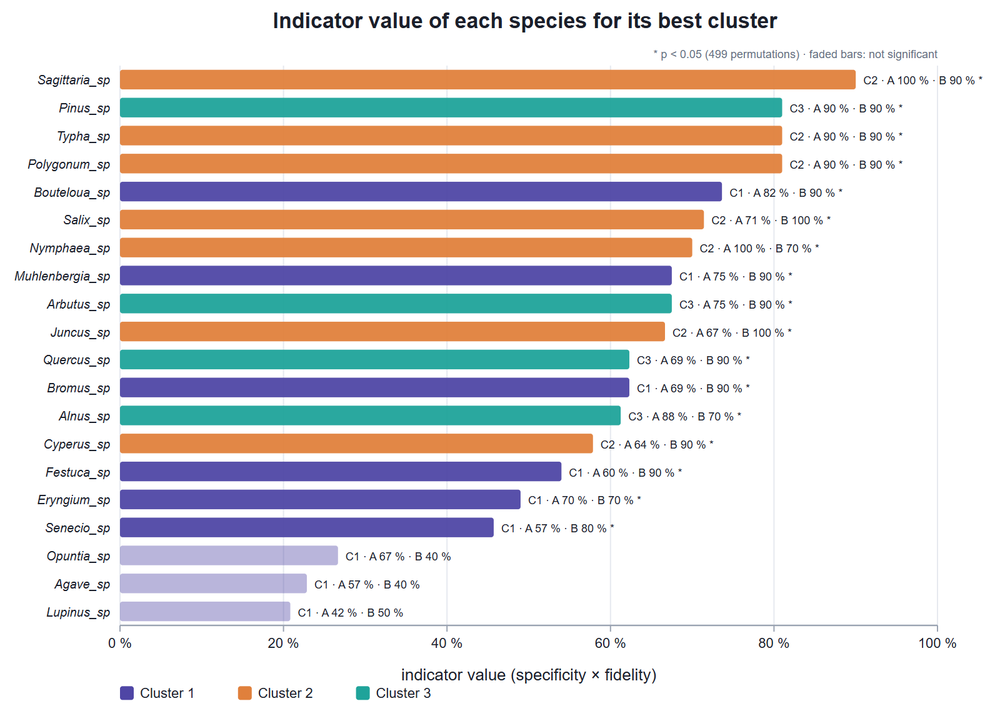
Fidelity counts presences. In an abundance table where almost every species occurs in every site, like the insect table, B equals 100% for all of them and IndVal reduces to specificity: a family is an indicator because it is concentrated in one cluster, not because it is absent from the others. With presence–absence data both parts count.
Test values look at one variable at a time. Linear discriminant analysis (LDA) seeks the combination of variables that best separates the clusters, and with it a rule for classifying any object. Card 3 appears when at least one quantitative variable is ticked.
LDA computes the within-cluster covariance matrix, W, and the between-cluster matrix, B, and seeks the axes that maximise the between-cluster variance relative to the within-cluster variance: the eigenvectors of W⁻¹B. There are at most k − 1 axes (LD1, LD2…), and the percentage of each tells what share of the separation it explains. Wilks’ lambda, Λ = ∏ 1/(1 + λi), ranges from 0 (complete separation) to 1 (none) and is tested with Bartlett’s χ². For classification, each object receives the posterior probability of belonging to each cluster, assuming normal clusters with a common covariance; the prior probabilities are proportional to the cluster sizes or equal. If W is nearly singular, the app adds a small ridge to it (10⁻⁴ of its mean trace).
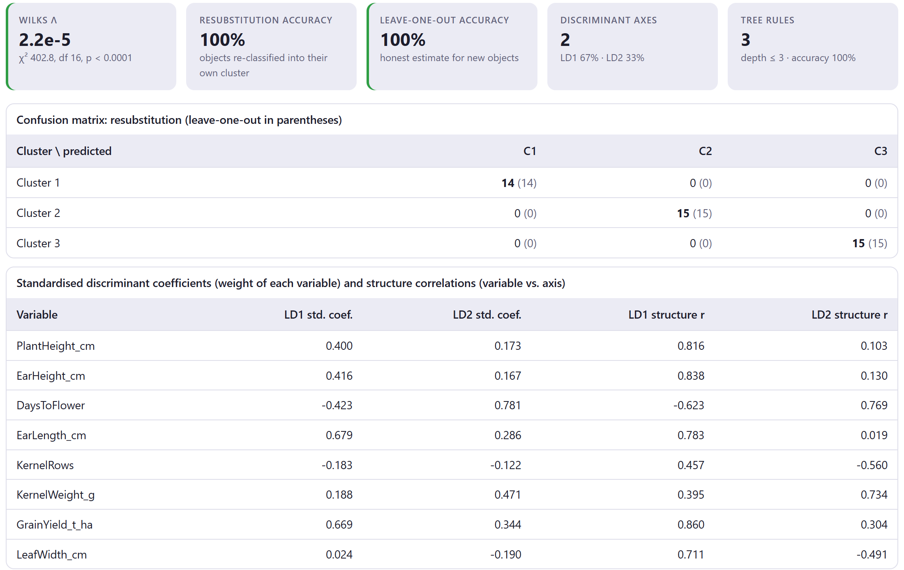
| Element | What it is |
|---|---|
| Wilks Λ | The lambda with its χ², degrees of freedom and P value; in green if p < 0.05. Very small values are written in scientific notation. |
| Resubstitution accuracy | Proportion of objects that the rule returns to their own cluster when all the data are used. Always optimistic. |
| Leave-one-out accuracy | Each object is classified with a rule fitted without it: the honest estimate for new objects. Green > 90%, amber > 70%. It is computed for up to 600 objects. |
| Discriminant axes | Number of axes and the percentage of each one. |
| Tree rules | Tree rules, depth and accuracy (section 8.5). |
| Standardised coefficients | The weight of each variable on each axis, in units of within-cluster standard deviation. They tell which variables the rule uses, but the weight is shared among correlated variables. |
| Structure correlations | The correlation of each variable with each axis. They tell what the axis means and are more stable than the coefficients. |
With the maize, LD1 correlates mainly with yield (r = 0.86), ear height (0.84) and plant height (0.82): it is a vigour axis that separates the valleys from the highlands. LD2 correlates with days to flowering (0.77) and grain weight (0.73), and inversely with the number of rows (−0.56): it separates the coast, early and with many rows, from the other two.
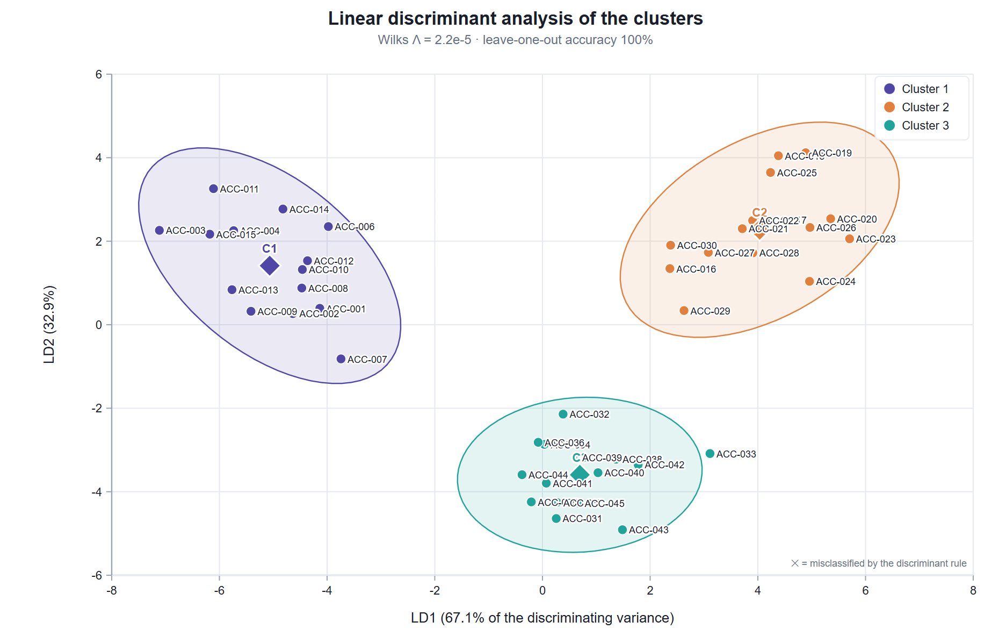
The discriminant rule has as many parameters per cluster as there are variables, and with many variables it learns the training objects by heart. Two warnings watch for this: Few objects for … variables, when there are fewer objects than variables plus clusters, and Resubstitution accuracy … is much higher than leave-one-out, when the difference exceeds 15 points. With the species presence data (22 variables, 30 sites) resubstitution is perfect, but leave-one-out gets only 53% right (exercise 2). Before classifying new objects, untick in card 1 the variables that do not discriminate and press Profile → again.
A classification tree summarises the clusters as yes-or-no questions about one variable at a time. It loses some accuracy compared with LDA, but it can be explained in a sentence and applied in the field without a calculator.
The tree starts with all the objects and tries every variable and every cut point (the midpoint between two consecutive observed values). It chooses the split that most reduces the Gini impurity, 1 − Σ pc², where pc is the proportion of each cluster in the node. It repeats the process in each branch until the node is pure, reaches the maximum depth, has fewer than twice the minimum number of objects per leaf, or no split improves the impurity. Each leaf predicts its majority cluster, and each path from the root to a leaf is a rule.
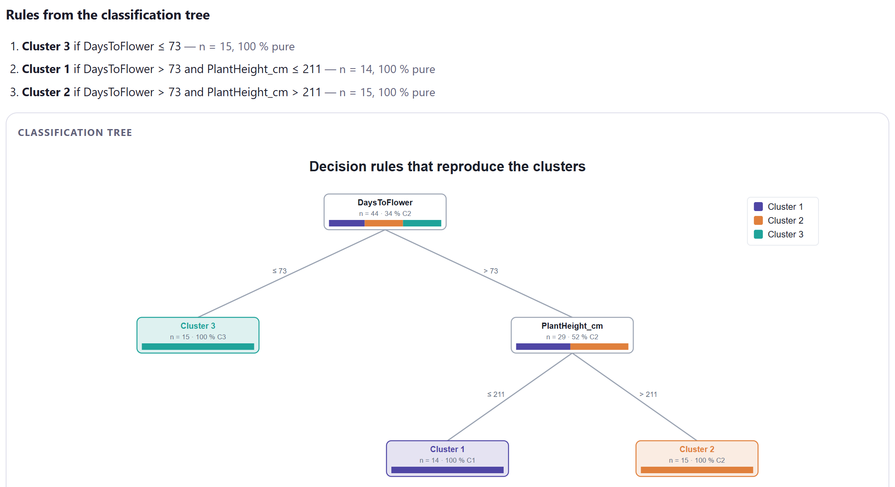
| Control | What it does |
|---|---|
| Prior probabilities | Proportional to cluster sizes (default) or Equal. With clusters of very different sizes, equal priors prevent the rule from favouring the large cluster. |
| Tree depth | From 1 to 6 levels; 3 by default. More depth means more rules and more risk of fitting the noise. |
| Minimum objects per leaf | From 1 to 50; 3 by default. Prevents rules that describe one or two objects. |
| Recompute | Refits the LDA and the tree with the new controls, without repeating the profiles. |
A typology proves truly useful when it can classify whatever comes next: a new accession, a site sampled the following year, a soil from another plot. Card 4 assigns new objects with three rules at once, and their agreement tells you how far to trust the assignment.
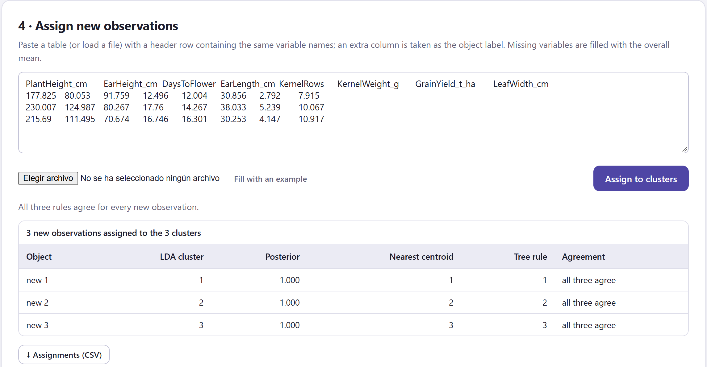
| Element | Detail |
|---|---|
| LDA cluster · Posterior | The cluster with the highest posterior probability in the discriminant analysis, and that probability. |
| Nearest centroid | The cluster whose centroid is closest, after standardising with the mean and standard deviation of the original data. |
| Tree rule | The cluster of the leaf that the object reaches in the tree. |
| Agreement | all three agree or methods differ. A disagreement flags an object between clusters; the posterior probability tells how doubtful it is. |
| The table | Paste it or load it with Choose File (CSV, TSV or text). The first row must contain the variable names, regardless of case; a column with any other name is taken as a label. Missing variables are filled with the overall mean, with a warning. |
| ⬇ Assignments (CSV) | Saves, for each object, the three assignments, the probability and the values used. |
Assigning is not reclustering: the centroids, the discriminant rule and the tree stay fixed. An object very different from all the others will still be assigned to the least distant cluster, with a high posterior if it lies far out in that cluster’s direction. If you expect objects of a type that was not in the data, compare their values with the profiles in card 2 and, if necessary, repeat the analysis with them included.
The block produces up to eight figures, all editable and exportable with the figure editor (section 9.1). The first four appear with quantitative variables; the categories figure, with categorical ones; the species figure, with IndVal; and the last two, with card 3.
| Figure | What it shows | Own controls |
|---|---|---|
| Cluster profiles as a heat map | Means by cluster and variable (figure 8.4). | Cell value (z, test value v or mean scaled by variable), Colour map, show values, all variables or the 30 most discriminating. |
| Radar of cluster means | One polygon per cluster with the means scaled from 0 to 1 (figure 8.12). | Number of variables (the most discriminating), scaling by the range of the means or of the data, fill opacity, line width, label size, legend. |
| Parallel coordinates | The means in z joined by lines, with the objects in faint lines (figure 8.13). | Number of variables, draw the objects (up to 200 by default), line width. |
| Distribution of each variable by cluster | Box plots by cluster, the most discriminating variables first (figure 8.14). | Number of variables (up to 24). |
| Composition of the categorical variables | Stacked bars by cluster (figure 8.5). | Number of variables, category palette. |
| Indicator species | IndVal by species (figure 8.7). | Number of species, names in italics. |
| Discriminant map | Objects on LD1 and LD2 (figure 8.9). | 95% ellipses, labels (automatic up to 60), label and point size, legend. |
| Classification tree | The tree with the composition of each node (figure 8.10). | Title, palette and legend. |
⬇ Profile table (CSV) saves, for each quantitative variable, the overall mean and standard deviation; for each cluster, the size, mean, standard deviation and test value; and F, its P value, η², the Kruskal–Wallis H and its P value. The Block 8 report includes the cluster summary cards, the tables and the figures exactly as you edited them. If Block 3 recomputes the matrix, the Block 7 results are cleared and you have to press Profile → again.
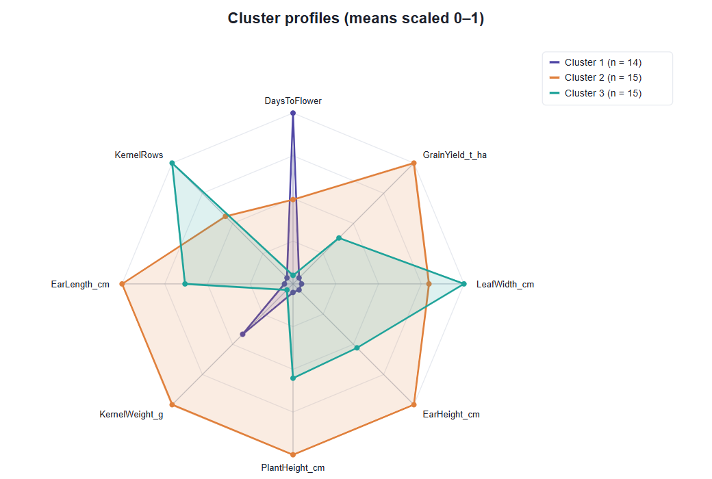
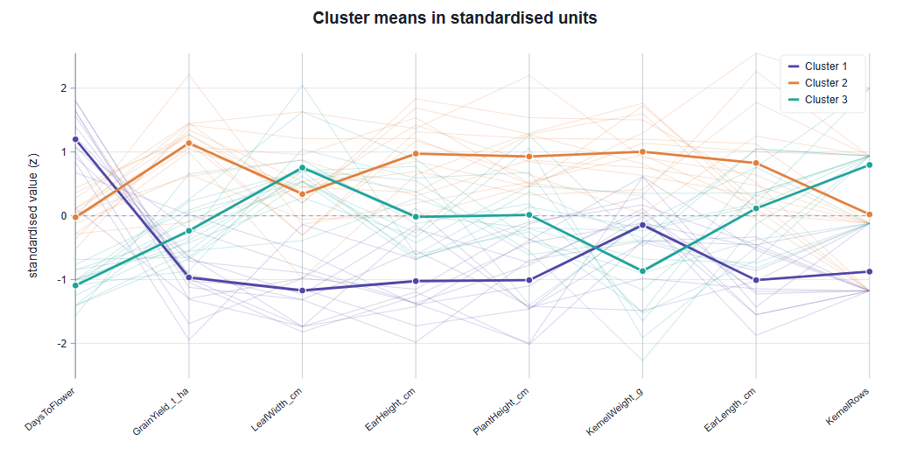
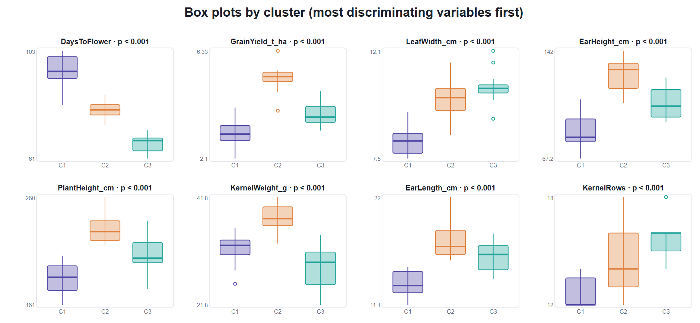
With each example prepared as in the previous chapters (UPGMA in Block 4 for the species presence data and the insects, the method proposed in Block 5, and Block 6 evaluated), table 8.8 summarises what Block 7 says with all the variables ticked. The exercises look at each case in detail.
| Example | k | Best separator | Discriminating | LDA leave-one-out | Tree |
|---|---|---|---|---|---|
| Maize races | 3 | DaysToFlower (η² 0.88) | 8 of 8 | 100% | 3 rules, 100% |
| Species presence | 3 | Sagittaria (η² 0.86) | 17 of 22 | 53.3% | 5 rules, 93% |
| Insect abundance | 3 | Carabidae (η² 0.77) | 14 of 14 | 100% | 3 rules, 100% |
| Soil profiles | 3 | CEC_cmol_kg (η² 0.96) | 8 of 8 | 100% | 3 rules, 100% |
| Distance matrix | 3 | No variables: there are no profiles; Block 8 is enabled. | |||
| Four simulated clusters | 4 | V5 (η² 0.94) | 5 of 5 | 100% | 4 rules, 100% |
| Uniform noise | 3 | V5 (η² 0.63) | 4 of 5 | 91.7% | 6 rules, 95% |
The soils, with the three clusters adopted in Block 6 (exercise 4 of chapter 7). “Discriminating” counts the variables with ANOVA p < 0.05.
Profiles turn numbers into recognisable types: highland maize, late and short; valley maize, tall and high-yielding; coastal maize, early. The tree shows that two field measurements are enough to recognise them, and the disagreement after altering an object shows why it pays to use all three rules: the tree decides with a single threshold, the discriminant gives a lot of weight to flowering, and the centroid weighs all eight variables equally. An object that is early but otherwise has the traits of the highlands is rightly flagged as doubtful.
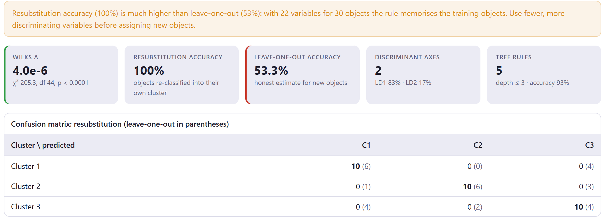
With communities, indicator species are the best description: they tell you what to look for in the field to recognise each habitat. The discriminant rule with all the species, by contrast, is a mirage: with more parameters than information it fits the 30 sites and fails on any new one. Leave-one-out accuracy is the only one that matters for prediction; resubstitution accuracy is useful only for comparison.
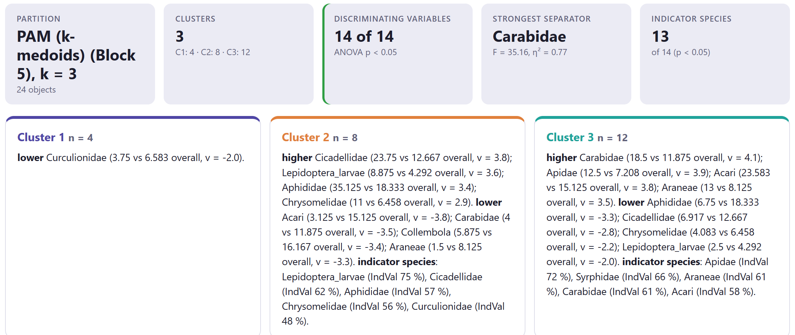
A cluster with no traits of its own is an intermediate cluster: its objects lie between the extremes and have nothing that characterises them by themselves. It is the same signal given by Block 5 (organic fields split up) and Block 6 (their cluster, doubtful under the bootstrap). Consistent with one another, the three pieces of evidence support describing a management gradient rather than three sharp types.
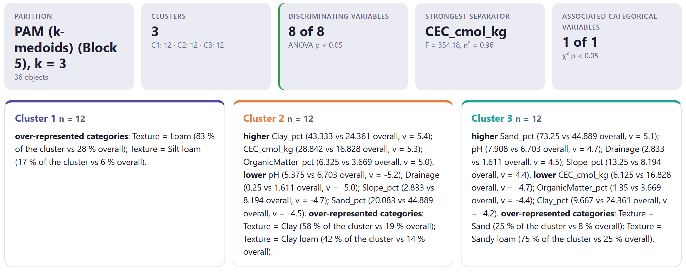
A cluster that is intermediate in every numerical variable can be a perfectly real type: here it is the loam soils, stable in Block 6 with Jaccard 1.000. What defines it is a categorical variable. That is why it pays to profile with all the available variables, supplementary ones included, and not only with those that have extreme means.
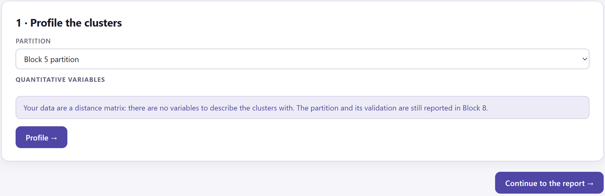
A distance matrix allows you to cluster and validate, but not to describe: to say how the clusters differ you need the variables. If you have data on the objects (origin, year, morphological traits), load them as a table with the matrix separately, or use them outside the app to interpret the clusters obtained.
Real clusters are usually distinguished by combinations, not by one variable. That is why the summary card lists several, LDA needs three axes and the tree uses the same variable at two levels. If Block 6 said that the structure is strong, Block 7 should be able to describe it clearly; if it cannot, review the variables you chose.
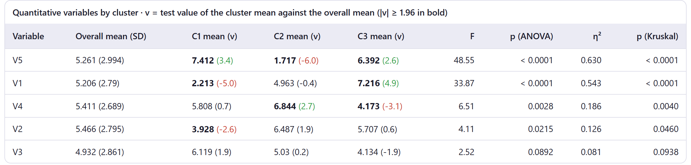
This is the warning of section 8.1 come true. Any partition, even of data with no structure, produces convincing profiles, significant variables and rules that recognise themselves with high accuracy. Only Block 6 (low silhouette, gap at k = 1, unstable clusters) reveals that there are no clusters. Never interpret Block 7 without first looking at Block 6.
In the methods section: that the clusters were described with test values, ANOVA and Kruskal–Wallis; that the P values of the active variables are descriptive; the number of IndVal permutations, if you used it; and, for the discriminant analysis, the prior probabilities and the leave-one-out validation. In the results: a description of each cluster with its main variables and categories, the indicator species with their IndVal and P value, and the leave-one-out accuracy. For example: “Cluster 1 (n = 14) was characterised by later flowering (95.5 vs. 80.6 days; v = 5.4) and shorter plants; a discriminant analysis correctly classified 100% of the accessions under leave-one-out validation”. The Block 8 paragraph drafts this with your values.
With the clusters described, all that remains is to bring everything together. The next chapter presents the Block 8 report: which sections it includes, how to choose them, the methods and results paragraphs it drafts with your values, and how to export the report and the figures.